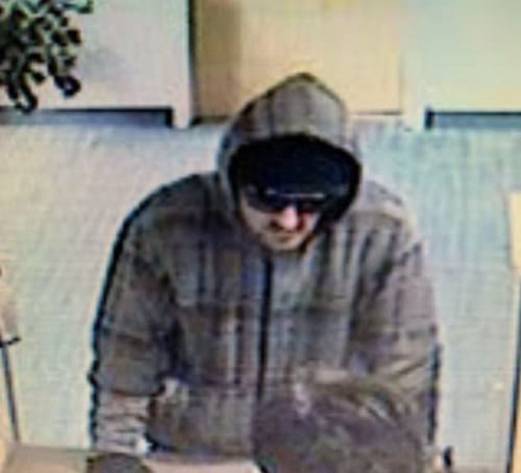
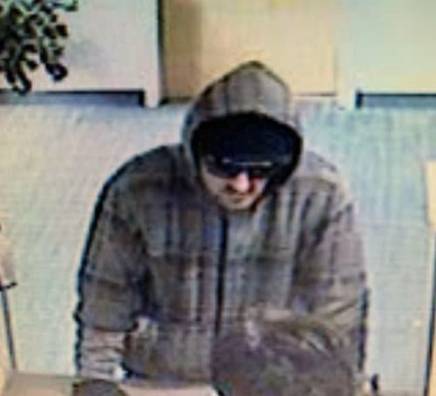

Utah Man Pleads Guilty to Robbing a Pharmacy
~2 min read | Published on 2020-04-01, tagged General-News using 321 words.
A man accused of robbing a pharmacy at gunpoint in an attempt to obtain Xanax pleaded guilty to amended charges on Monday, including a drug charge filed by prosecutors after the police linked the man to 80 transactions on the darkweb.
Brad Thayne Bingham, 31, of Logan, Utah, pleaded guilty to second-degree robbery, third-degree possession of a firearm by a restricted person, and third-degree possession of a controlled substance with intent to distribute. Prosecutors dismissed a single possession charge in exchange for the guilty plea. They also agreed not to file any additional charges if Bingham accepted their plea agreement.
Cache County prosecutors had filed the possession with intent to distribute charge after the police had arrested Bingham for the pharmacy robbery, according to court documents. During the execution of a search warrant at the man’s home, police found FedEx and USPS packages that both contained alprazolam pills. The charge was also supported by evidence found on Bingham’s phone: using his mobile device, Bingham had purchased $5,700 worth of Xanax pills on the darkweb, prosecutors said.

Police arrested Bingham on March 5 after identifying him as the suspect in a robbery at the Intermountain Healthcare Instacare pharmacy on March 4. Bingham, after telling employees that he had a gun, walked out of the pharmacy with $470 Xanax pills. The police said the stolen pills had a value of $756.
His arrest took place without incident:
According to the affidavit, Bingham had called the pharmacy several times the day prior asking for Xanax. Police allege that file photos, online photos and surveillance footage were used to identify Bingham. Bingham was arrested outside his residence while riding a bicycle. According to police, he had a .45 caliber handgun in the backpack he was wearing at the time. Police found alprazolam matching the stolen dosages and the clothes believed to be worn during the robbery.
Bingham is scheduled to be sentenced on May 18.
Brad Thayne Bingham, 31, of Logan, Utah, pleaded guilty to second-degree robbery, third-degree possession of a firearm by a restricted person, and third-degree possession of a controlled substance with intent to distribute. Prosecutors dismissed a single possession charge in exchange for the guilty plea. They also agreed not to file any additional charges if Bingham accepted their plea agreement.
Cache County prosecutors had filed the possession with intent to distribute charge after the police had arrested Bingham for the pharmacy robbery, according to court documents. During the execution of a search warrant at the man’s home, police found FedEx and USPS packages that both contained alprazolam pills. The charge was also supported by evidence found on Bingham’s phone: using his mobile device, Bingham had purchased $5,700 worth of Xanax pills on the darkweb, prosecutors said.

CCTV footage of Bingham during the robbery
Police arrested Bingham on March 5 after identifying him as the suspect in a robbery at the Intermountain Healthcare Instacare pharmacy on March 4. Bingham, after telling employees that he had a gun, walked out of the pharmacy with $470 Xanax pills. The police said the stolen pills had a value of $756.
His arrest took place without incident:
According to the affidavit, Bingham had called the pharmacy several times the day prior asking for Xanax. Police allege that file photos, online photos and surveillance footage were used to identify Bingham. Bingham was arrested outside his residence while riding a bicycle. According to police, he had a .45 caliber handgun in the backpack he was wearing at the time. Police found alprazolam matching the stolen dosages and the clothes believed to be worn during the robbery.
Bingham is scheduled to be sentenced on May 18.